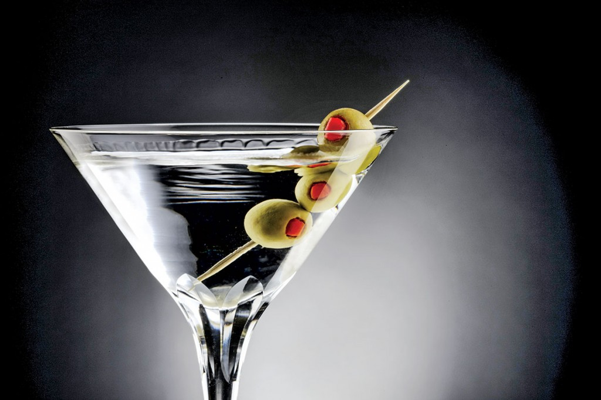
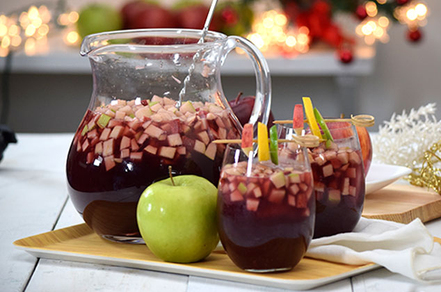

Martini
Existen varias historias de cómo surgió el Martini, sin embargo, su receta apareció por primera vez en un libro de cocteles en 1862 de título How to Mix Drinks, cuyo autor es Jerry Thomas, y al cual muchos le atribuyen su preparación. Se dice que a Jerry se le ocurrió mezclar ginebra, vermouth y un poco de licor de cereza.
Link de la informacionOld Fashioned

La receta original del Old Fashioned se estableció en 1880 en el Pendennis Club, un exclusivo club de caballeros en Louisville, Kentucky. Se dice que el barman del club decidió utilizar Whisky en honor al coronel James E. Pepper, un famoso destilador de Bourbon.
Link de la informacionClericot
El origen del clericot es romano. Nació en las fiestas en honor a Pomona, la diosa de los frutos y los árboles. Esta tradición se vio enriquecida con las celebraciones celtas, quienes festejaban a un caballero llamado Samhain, tomando vino durante las mismas fechas.
Link de la informacion